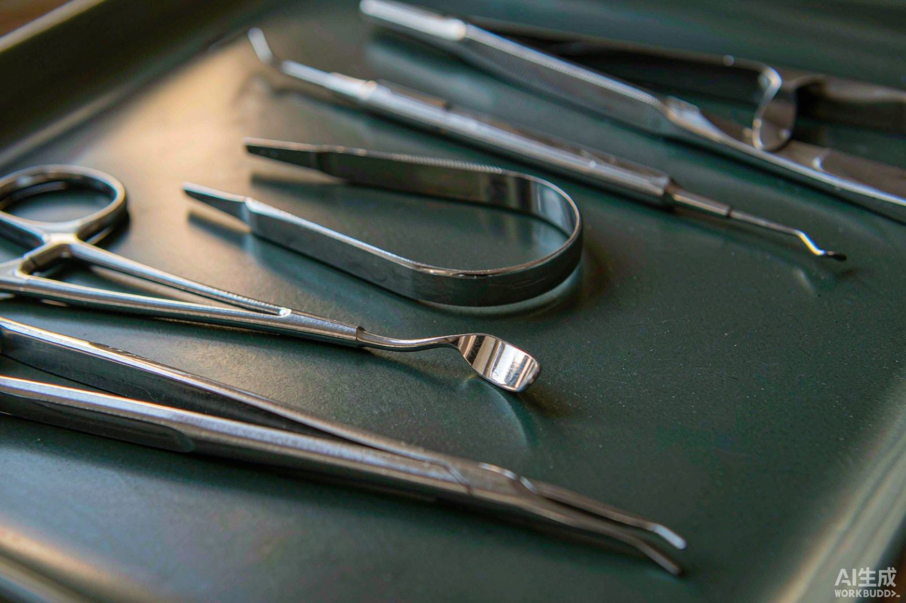

集采降的是耗材价
带量采购针对种植体与修复耗材的采购成本，反映到患者端只是费用构成中的一项，不等于全流程降同等幅度。
单颗 1980–9800 元起，半口 / 全口 3 万–5.8 万元起，这是惠州市场行情，用来判断量级。惠州市惠城辰启口腔门诊部（江北新旺路 38 号）的实际费用取决于 CBCT 拍出的骨条件与所用材料，检查后出分项报价。
同一颗牙的费用差异，主要来自种植体品牌、基台与牙冠材料，以及是否需要植骨。惠州市场常见区间从国产约 2800 元到瑞典诺贝尔 9800 元起，共 7 档。
| 品牌 / 产地 | 单颗参考区间 | 说明 |
|---|---|---|
| 国产种植体 | 约 2800 元起 | 国内生产，近年临床使用量上升 |
| 韩国登腾 Dentium | 1980 元起 | 入门级进口品牌，市场使用广泛 |
| 韩国奥齿泰 Osstem | 3980 元起 | 韩国主流进口品牌 |
| 韩国皓圣 Hiossen | 5800 元起 | 韩国进口品牌 |
| 德国 ICX | 6800 元起 | 德国进口品牌 |
| 瑞士 ITI（Straumann） | 8500 元起 | 高端品牌，长期临床文献较多 |
| 瑞典诺贝尔 Nobel Biocare | 9800 元起 | 高端品牌，历史较长 |
价格来源：惠州地区公开的口腔诊疗价格汇总页面（2026 年公开数据）。本页仅说明费用量级，不构成报价承诺。
搜索「集采后一颗多少钱」时，两件事常被混在一起：集采压的是种植体耗材采购价，价格公示报的是单颗常规种植的全流程价（含检查、手术、修复）。前者是耗材端，后者是打包端，数字不能互相替代。
核验来源：惠州市医疗保障局《2026 年第三季度口腔种植服务医疗机构单颗常规种植牙全流程价格通告》，通告原文。定点名单与价格调控名单是两份不同的名单，可分别核验。本页对外只提供市场参考区间，不构成报价承诺。
七档品牌摆在一起，最常被问的是「便宜能不能用、贵的值不值」。差价并不只是「国产与进口」三个字，而是四件可以查证的事。
本页不评价哪个品牌更好，只给判断路径：单颗、骨条件良好、预算有限，入门档可纳入考虑；多颗缺失、需植骨、需导板、或对长期可查数据要求高，中高端档更稳妥。具体选择须由 CBCT 影像与面诊结果决定，不能只按价格排序。上表价格均为惠州市场参考区间，非本院实际报价。
门诊部是惠城区社会基本医疗保险定点机构（编码 H44130200667），但医保定点资格覆盖的是诊疗类项目，不包括种植修复。
医保能否报销、报销比例与起付线，按惠州市医保政策与参保类型执行，详见医保说明页。
常规单颗种植全程约 3–6 个月，分六步完成；需植骨或上颌窦提升时延长至 6–9 个月。实际步骤由医师依据影像与口腔状况调整。

以上为通用口腔医学常识，用于说明适用范围，不构成诊断结论。是否适合种植须经面诊与影像检查确认。
种植牙不是「来了就能种」。能不能种、怎么种、分几次种，取决于三件事，初诊拍片主要就是评估它们。
三道评估均属种植前常规流程，具体判断以面诊与 CBCT 影像为准。
惠州市场常见区间为 1980–9800 元/颗起，差异主要来自种植体品牌与是否需植骨。半口 / 全口修复约 3 万–5.8 万元起。以上均为市场参考区间，不是本门诊部报价，实际费用须面诊与影像检查后确定。
不能。种植牙属自费项目，不在医保支付范围内。门诊部本身具备医保定点资格（编码 H44130200667），但该资格不覆盖种植修复。
单颗常规种植全程通常 3–6 个月：植入后下颌约 3 个月、上颌约 4–6 个月完成骨结合，再取模戴冠。若需植骨或上颌窦提升，周期延长至 6–9 个月。具体由影像评估后确定。
手术在局部麻醉下进行，麻醉起效后操作过程不产生疼痛。术后 2–3 天可能出现肿胀与隐痛，按医嘱用药可缓解。疼痛感受个体差异较大，无法预先承诺。
需先评估骨高度与宽度。骨量不足时可做植骨或上颌窦提升，属额外术式，费用另计；严重不足时也可能不适合立即种植，需改用其他修复方式。
在口腔卫生维护良好、定期复查的前提下，多数种植体可使用十年以上。使用寿命受骨条件、咬合习惯、全身疾病与维护情况影响，无法对个体作出年限承诺。
需要先由内科将指标控制稳定，再由口腔医师评估。未控制的糖尿病会显著影响骨结合与伤口愈合，通常不建议此时手术。
年龄本身不是绝对禁忌，关键是全身状况与骨条件。高龄患者需评估用药情况（如抗凝药）、骨密度与配合度，由医师面诊判断。
即刻种植与即刻负重是两件事：前者指拔牙同期植入种植体，后者指植入后立即戴上牙冠负重。即刻负重需同时满足骨量充足、初期稳定性达标、咬合负载可控三个前提，属于特定条件下的做法，不是常规方案。是否可行须由 CBCT 影像与术中情况判断，本门诊部不将「当天戴牙」作为常规选项对外承诺。
只看初始价格看不出结论。活动假牙初始费用低，但需定期更换与调整、咀嚼效率有限，基托长期压迫还可能加速缺牙区牙槽骨吸收；种植牙初始投入高，在口腔卫生与复查到位的前提下使用年限更长。选择取决于缺牙数量、骨条件、全身状况与预算节奏，建议把十年量级的支出与复诊成本一起算，而不只比第一笔费用。